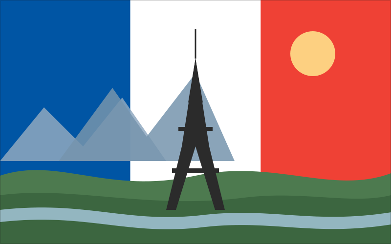

Terre de France
An Earth Science project on the geophysical processes that shape France.
France sits at a crossroads of European geology and culture — a single country whose landscape stretches from Atlantic beaches and Mediterranean coastline to the folded peaks of the Alps and Pyrenees. This site tracks a semester-long study of the physical processes at work across that landscape, from mapmaking and plate tectonics to weathering, rivers, coastlines, and climate.

Overview of France
Historically, France has been shaped by waves of settlement and rule — from Roman Gaul and medieval kingdoms to the French Revolution of 1789, which reshaped not just France but the political landscape of the modern world. Its long history as a unified nation-state has left a dense layer of architecture, art, and institutions still visible today.
Culturally, France is known for its contributions to art, philosophy, cuisine, and fashion, and for a strong regional diversity — Brittany, Provence, Alsace, and Corsica each carry distinct languages, foods, and traditions within one country.
Socially, France is a republic built around the ideals of liberté, égalité, fraternité (liberty, equality, fraternity), with a strong tradition of civic life, public education, and social services.
Economically, France is one of the largest economies in Europe, with major industries in agriculture, aerospace, luxury goods, tourism, and nuclear energy. Its geography plays a direct role here too: fertile river basins support agriculture, mountain ranges support hydropower and winter tourism, and long coastlines support fishing, shipping, and beach tourism.
Explore the Earth Processes
Maps & Cartography
How France has been measured, projected, and mapped.
Plate Tectonics
The tectonic forces behind the Alps, Pyrenees, and Massif Central.
Weathering & Erosion
How rock and soil break down and move across the landscape.
Fluvial & Coastal Processes
Rivers like the Seine and Rhône, and France's Atlantic and Mediterranean coasts.
Climate & Biomes
The climate zones and ecosystems found across French regions.